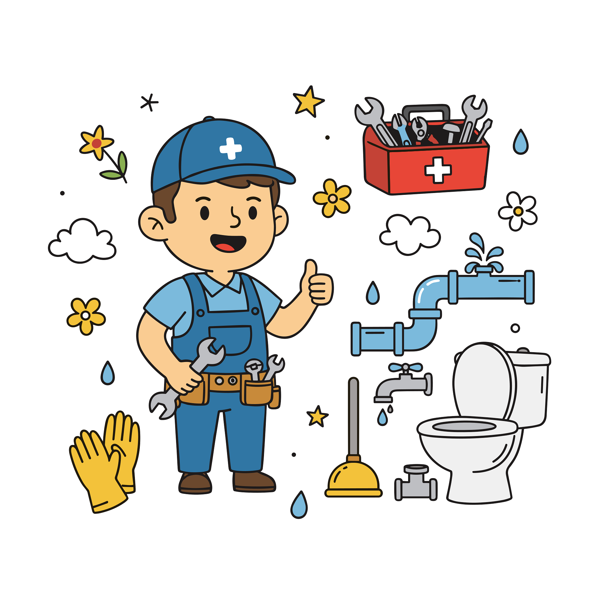

Welcome to QuickFix Connect
QuickFix Connect is your one-stop platform for finding reliable and skilled service providers in your area.
Whether you need help with repairs, cleaning, appliance repairs or maintenance, we connect you with trusted professionals quickly and easily.
Our goal is to save you time, reduce stress and give you peace of mind by providing quality services you can depend on.
Service Overview
- Plumbing
- Electrical Repairs
- Cleaning Services
- Appliance Repairs
- Home Maintenance
- Garden Services
Why Choose QuickFix Connect?
- Trusted and skilled service providers
- Fast and easy enquiry process
- Affordable and reliable services
- Wide range of services available
- Support for customers and local service providers
Need Help Today?
Let QuickFix Connect help you find the right service provider for the job.